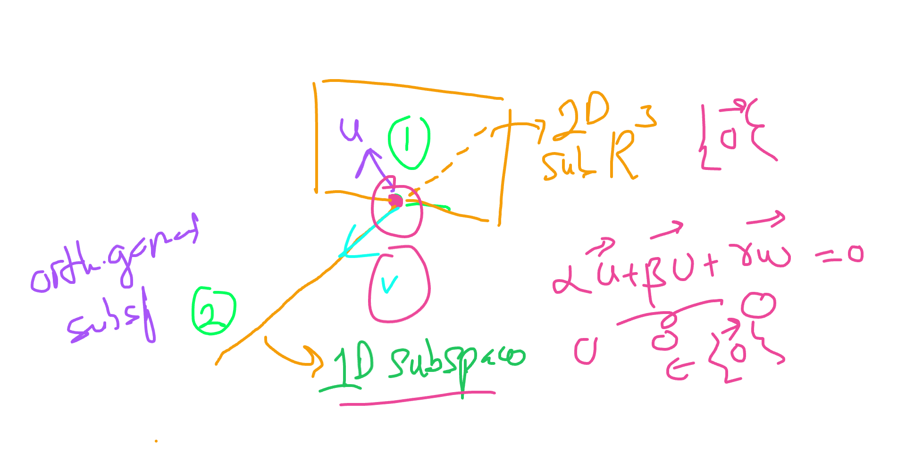
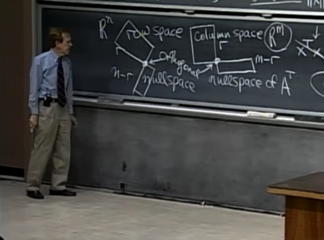
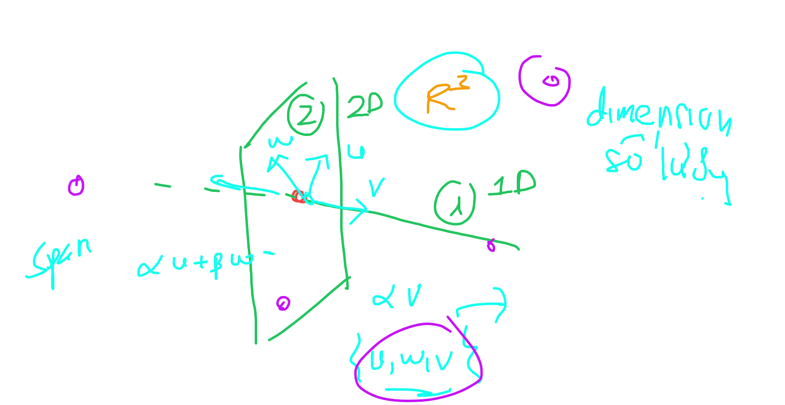

Vector và không gian con trực giao
Hai vector vuông góc khi tích vô hướng bằng 0. Từ một ý đơn giản đó, bài này cho thấy bốn không gian con của một ma trận ghép thành hai cặp vuông góc, và dẫn tới ma trận \(A^TA\), chìa khoá của bài toán bình phương tối thiểu.
- Cần biết trước
- Bốn không gian con · Tích vô hướng & chuẩn
- Học tiếp
- Phép chiếu · Gram–Schmidt & QR · Định lý phổ · Gradient liên hợp (Nocedal 5.1)
- Video giảng lại
- 3 video ôn tập, tổng khoảng 91 phút
Vuông góc: từ vector đến không gian con
1.1Khi nào hai vector vuông góc?
Orthogonal, perpendicular, vuông góc, trực giao: cùng một nghĩa. Phép thử rất gọn: \(x\) và \(y\) vuông góc khi và chỉ khi tích vô hướng của chúng bằng 0,
Vì sao lại là tích vô hướng? Strang nối nó với định lý Pythagoras. Bình phương độ dài của một vector chính là \(x^Tx\): với \(x = (1, 2, 3)\) thì \(\lVert x\rVert^2 = 1^2 + 2^2 + 3^2 = 14 = x^Tx\). Tam giác tạo bởi \(x\), \(y\) và \(x + y\) vuông khi
Ví dụ trên bảng: \(x = (1, 2, 3)\), \(y = (2, -1, 0)\), \(x^Ty = 2 - 2 + 0 = 0\), và đúng là \(14 + 5 = 19 = \lVert (3, 1, 3)\rVert^2\).

Một trường hợp đặc biệt: vector 0. Tích vô hướng của nó với bất kỳ vector nào cũng bằng 0, nên theo đúng luật, vector 0 vuông góc với mọi vector, kể cả chính nó. Chi tiết nhỏ này quay lại ngay ở mục sau.
1.2Hai không gian con vuông góc
Định nghĩa: hai không gian con \(S\) và \(T\) trực giao khi mọi vector trong \(S\) vuông góc với mọi vector trong \(T\). Strang hỏi: bức tường và mặt sàn trong phòng, hai mặt phẳng qua gốc trong \(\mathbb{R}^3\), có trực giao không?

Và theo định nghĩa này thì hai subspace không orthogonal - vì dễ thấy không phải mọi vector nào của mặt tường cũng orthogonal với mặt sàn. Và điển hình là trên intersection line, vector không thể orthogonal với chính nó
Do đó, theo gs, hai subspace không nên intersect nhau bởi một line nếu muốn orthogonal. Hoặc đúng hơn là nếu muốn orthogonal thì chúng chỉ có thể intersect nhau tại ZERO vì chỉ có zero vector mới orthogonal với chính nó
Trong \(\mathbb{R}^2\), các cặp không gian con trực giao chỉ có hai dạng: \(\{0\}\) với một đường thẳng qua gốc, hoặc hai đường thẳng qua gốc vuông góc nhau.
1.3Row space vuông góc với nullspace
Viết \(Ax = 0\) theo từng hàng là thấy ngay:
Mỗi phần tử của \(Ax\) là tích vô hướng của một hàng với \(x\). Với \(x\) trong nullspace, tất cả các tích đó bằng 0, nên \(x\) vuông góc với từng hàng. Và vuông góc với từng hàng thì vuông góc với mọi tổ hợp tuyến tính của các hàng:
Vậy mọi vector trong row space vuông góc với mọi vector trong nullspace. Làm y như vậy với \(A^Ty = 0\): các hàng của \(A^T\) chính là các cột của \(A\), nên column space vuông góc với left nullspace.


Bấm vào ảnh để xem to.
Số chiều và phần bù trực giao
Strang hỏi: trong \(\mathbb{R}^3\), lấy hai đường thẳng qua gốc vuông góc nhau. Có ma trận nào mà row space và nullspace chính là hai đường đó không?
Không. Với \(A\) có \(n\) cột và hạng \(r\), row space có số chiều \(r\), nullspace có số chiều \(n - r\), cộng lại luôn bằng \(n\). Hai đường thẳng chỉ có \(1 + 1 = 2\) chiều, không đủ lấp đầy \(\mathbb{R}^3\). Row space và nullspace không chỉ vuông góc mà còn bù nhau: nullspace chứa tất cả các vector vuông góc với row space. Strang gọi chúng là phần bù trực giao (orthogonal complements) trong \(\mathbb{R}^n\).
Ví dụ của Strang:
Hàng 2 bằng 2 lần hàng 1, nên row space là đường thẳng qua \((1, 2, 5)\). Nullspace là tập nghiệm của \(x_1 + 2x_2 + 5x_3 = 0\), một mặt phẳng, với hai nghiệm đặc biệt \((-2, 1, 0)\) và \((-5, 0, 1)\).
Và liên hệ với 18.02 ta biết <1, 2, 5> chính là NORMAL VECTOR (vector pháp tuyến) của mặt phẳng, nó sẽ vuông góc với mọi vector trong mặt phẳng. Vậy từ đó trong trường hợp này bức tranh về rowspace C(Aᵀ) và nullspace N(A) rất rõ rằng, C(Aᵀ) chính là line đi qua normal vector và N(A) chính là plane.
Khi Ax = b vô nghiệm: ma trận AᵀA
3.1Đặt vấn đề
Xét ma trận "cao ốm": \(m > n\), nhiều phương trình hơn ẩn. Chỉ có \(n\) cột nên column space không thể phủ hết \(\mathbb{R}^m\), chắc chắn có những \(b\) làm \(Ax = b\) vô nghiệm. Đây là chuyện thường gặp chứ không phải ngoại lệ.
Gs cho rằng ví dụ về matrix như này có rất nhiều, ví dụ như ta đo heart rate, chỉ có một variable, nhưng mỗi lần đo ta sẽ một giá trị khác, để rồi ta có rất nhiều equation, nhưng chỉ có 1 cols. Và giá trị khác nhau mỗi lần là do noise, tuy nhiên bên trong giá trị vẫn chứa thông tin. Và ta muốn tách những thông tin hữu ích ra khỏi noise
Bỏ bớt phương trình cho tới khi giải được? Không hợp lý: chẳng có lý do gì để coi phương trình này tốt hơn phương trình kia, và dữ liệu bị bỏ đi có thể chứa thông tin quan trọng. Strang làm khác: nhân hai vế với \(A^T\),
Phương trình mới, Strang gọi là "good equation", luôn giải được. Bài 15 và 16 sẽ cho thấy \(\hat{x}\) là gì; bài này chỉ hỏi: \(A^TA\) có khả nghịch không?
3.2AᵀA là ma trận thế nào?
\(A\) cỡ \(m \times n\) thì \(A^TA\) cỡ \(n \times n\): vuông. Và đối xứng, vì \((A^TA)^T = A^T(A^T)^T = A^TA\). Nhưng không phải lúc nào cũng khả nghịch. Hai ví dụ trên bảng:
Hình tương tác Sửa một số trong \(A\) và xem \(A^TA\), hạng của hai ma trận và kết luận thay đổi theo. Thử làm cột 2 thành bội của cột 1.
3.3Vì sao rank(AᵀA) = rank(A)
Mấu chốt là nullspace. Hai ma trận có cùng nullspace: \(N(A^TA) = N(A)\).
- Nếu \(Ax = 0\) thì nhân \(A^T\) vào được \(A^TAx = 0\).
- Ngược lại, nếu \(A^TAx = 0\), nhân \(x^T\) vào hai vế: \(x^TA^TAx = (Ax)^T(Ax) = \lVert Ax\rVert^2 = 0\). Độ dài chỉ bằng 0 khi vector bằng 0, nên \(Ax = 0\).
Hai ma trận cùng có \(n\) cột và cùng nullspace, nên cùng số cột tự do \(n - r\), và cùng hạng:
Kết luận của bài:
Bài sau, \(A^TA\) đóng vai trò then chốt trong phép chiếu và bình phương tối thiểu.